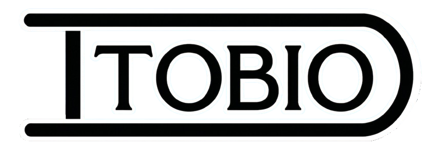

Nos especializamos en devolver el funcionamiento original de tu lavarropas mediante un diagnóstico preciso y reparaciones mecánicas y eléctricas. Trabajamos con repuestos de calidad y ofrecemos garantía en cada trabajo.
Encontramos la causa real de la falla.
Desde un cambio de rulemanes hasta reparaciones de mayor complejidad.
Todos nuestros trabajos cuentan con garantía.
Desde equipos domésticos hasta industriales.
Realizamos una limpieza profunda y un mantenimiento preventivo para mejorar el funcionamiento del equipo. Revisamos cada componente importante, eliminamos residuos acumulados y detectamos posibles desgastes antes de que se conviertan en averías costosas.
¿Tenés un lavarropas que ya no utilizás o dejó de funcionar? Compramos equipos usados, incluso con fallas mecánicas o eléctricas. Realizamos una evaluación rápida y ofrecemos una tasación justa, ocupándonos de todo el proceso para que vender tu equipo sea simple y seguro.
Quiero venderDisponemos de lavarropas nuevos y usados completamente revisados por nuestro servicio técnico. Todos los equipos son probados antes de la entrega para garantizar un excelente funcionamiento y brindar mayor tranquilidad a nuestros clientes.
Ver lavarropas disponibles